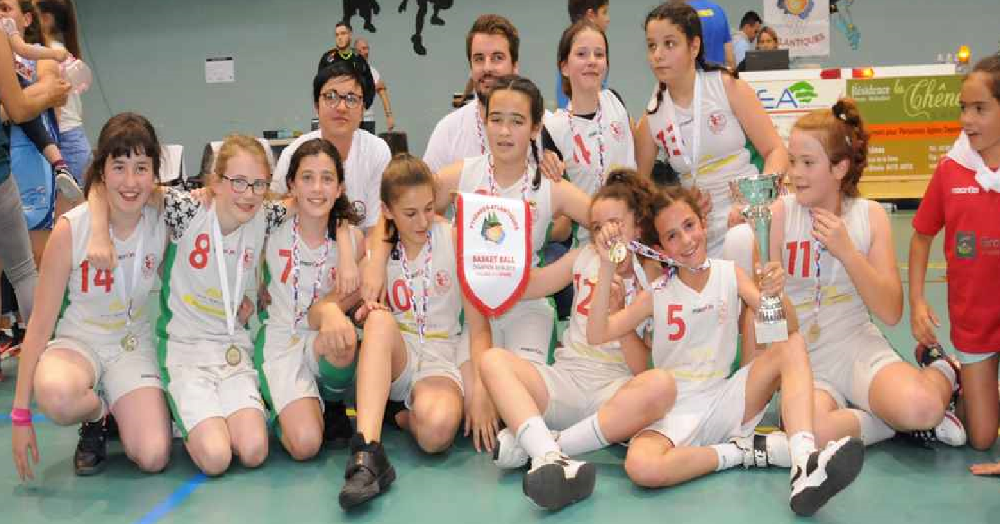

.png)
SCAN BASKET
Next-Gen

| Statistiques | Nom du joueur | Nombre |
|---|---|---|
| Meilleure Marqueuse | Charline | 304 |
| Meilleure Moyenne Pts/M | Charline | 21.7 |
| Meilleure Passeuse | Pauline | 53 |
| Meilleure Moyenne Pas/M | Pauline | 4.4 |
| Meilleure Rebondeuse | Charline | 216 |
| Meilleure Moyenne R/M | Charline | 15.4 |
| Meilleure Interceptrice | Pauline | 60 |
| Meilleure Moyenne I/M | Pauline | 5 |
| Meilleure Contreuse | Charline | 16 |
| Meilleure Moyenne C/M | Charline | 1.1 |
| Meilleur Pourcentage | Charline | 52.2 |
| 3 points marqués | Amandine / Léonie | 5 |
| Meilleure Pourcentage à 3P | Amandine | 27.8 |
| Lancer-Franc marqués | Charline | 43 |
| Meilleur Pourcentage aux LF | Pauline | 70.6 |
Statistiques individuelles de la saison régulière
| Statistiques | Nom du joueur | Nombre |
|---|---|---|
| Meilleure Marqueuse | Charline | 19 |
| Meilleure Moyenne Pts/M | Charline | 19 |
| Meilleure Passeuse | Daphnée | 4 |
| Meilleure Moyenne Pas/M | Daphnée | 4 |
| Meilleure Rebondeuse | Charline | 21 |
| Meilleure Moyenne R/M | Charline | 21 |
| Meilleure Interceptrice | Daphnée, Célia et Amandine | 2 |
| Meilleure Moyenne I/M | Daphnée, Célia et Amandine | 2 |
| Meilleure Contreuse | -------- | -- |
| Meilleure Moyenne C/M | -------- | -- |
| Meilleur Pourcentage | Amandine | 60 |
| 3 points marqués | Amandine | 1 |
| Meilleure Pourcentage à 3P | Amandine | 50 |
| Lancer-Franc marqués | Charline | 5 |
| Meilleur Pourcentage aux LF | Coralie | 75 |
Statistiques individuelles des Play-Off